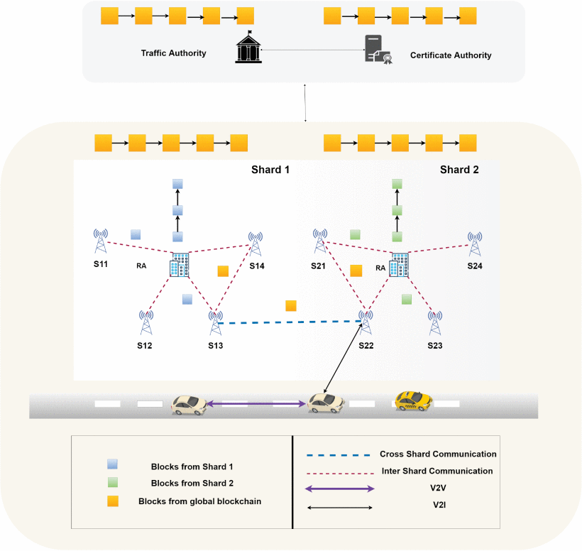
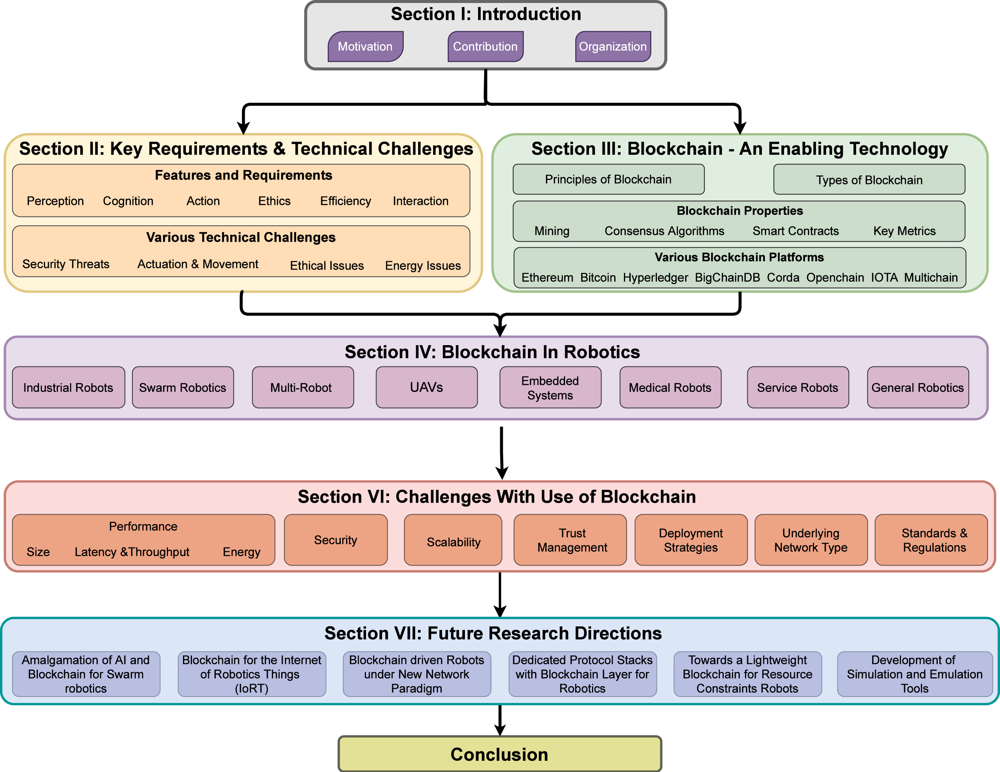
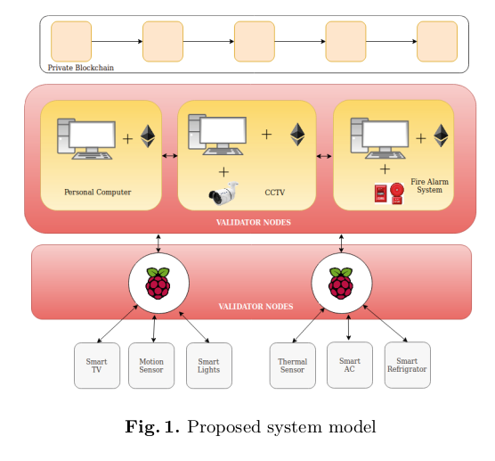
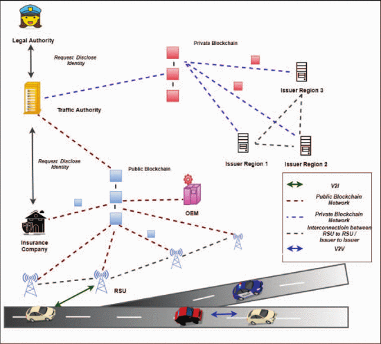

I am an R&D Engineer at Scurid Incorporation, Japan where I work on Blockchain and Internet of Things.
I graduated with a Master's Degree from the Department of Computer Science and Engineering at the Indian Institute of Technology, Guwahati, India. I was supervised by Prof. Sukumar Nandi. Before this, I worked as an Assistant Project Engineer at Open Source Intelligence Laboratory and Network Security and Systems Lab on a couple of sponsored projects from August 2019 to June 2022.
In my free time a I contribute to Project Cyber Angel a humanitarian project to safeguard digital privacy for kids.
I am much interested in the areas of blockchain integration with IoT for improved security, performance and decision making. Over, the years I have contributed to the research works in the domain of Blockchain integration with IoT and Autonomous Vehicles. My work Managing Smart Home Appliances with Proof of Authority and Blockchain bagged Second Best Paper Award at i4cs Wolfsburg Germany. Below are few of my selected publications, visit Google Scholar for full list of publications.

Blockchain-based Adaptive Trust Management in Internet of Vehicles Using Smart Contract Pranav K Singh,
Roshan Singh,
Sunit K Nandi, Kayhan Zrar Ghafoor, Danda B. Rawat,
Sukumar Nandi IEEE Transaction on Intelligent Transportation Systems, 2020
paper /
code Cited by : +

A Survey on Blockchain in Robotics: Issues, Opportunities, Challenges and Future Directions
Srinivas Aditya,
Roshan Singh,
Pranav K Singh,
Anshuman Kalla,
Journal of Network and Computer Applications, Elsevier, 2021
Cited by : +

Managing Smart Home Appliances with Proof of Authority and Blockchains Pranav K Singh,
Roshan Singh,
Sunit K Nandi,
Sukumar Nandi I4CS, Wolfsburg, Germany, 2019 Awarded 2nd Best Paper paper Cited by : +

A blockchain-based approach for usage based insurance and incentive in ITS Pranav K Singh,
Roshan Singh,
Gwmsrang Muchahary,
Mridutpal Lahon,
Sukumar Nandi IEEE TENCON, Kerala, India, 2019
paper Cited by : +